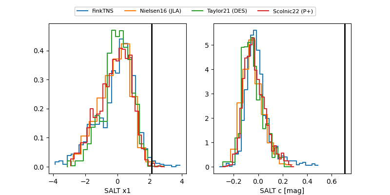

FINK: ZTF25ablgjsx
Lasair: ZTF25ablgjsx
ALeRCE: ZTF25ablgjsx
TNS: 2025vjc
YSE: 2025vjc
ZTF25ablgjsx (ztf,fink)
2025vjc (tns,yse)
equatorial (ra, dec) = (16.5725,-0.91922)
galactic (l, b) = (131.2905,-63.54967)

last atlasc=19.23, atlaso=19.35, ztfg=19.62, ztfr=19.88
2 atlasc, 1 atlaso, 5 ztfg, 9 ztfr detections